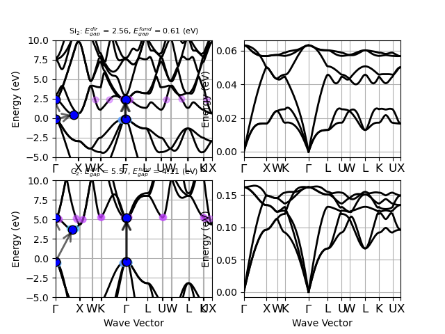

<!DOCTYPE html>

<html xmlns="http://www.w3.org/1999/xhtml">
  <head>
    <meta http-equiv="Content-Type" content="text/html; charset=utf-8" />
    <title>Electrons and Phonons from the materials project website &#8212; abipy 0.7.0.dev documentation</title>
    <link rel="stylesheet" href="../_static/bootstrap-sphinx.css" type="text/css" />
    <link rel="stylesheet" href="../_static/pygments.css" type="text/css" />
    <link rel="stylesheet" href="../_static/gallery.css" type="text/css" />
    <link rel="stylesheet" href="../_static/my_style.css" type="text/css" />
    <script type="text/javascript">
      var DOCUMENTATION_OPTIONS = {
        URL_ROOT:    '../',
        VERSION:     '0.7.0.dev',
        COLLAPSE_INDEX: false,
        FILE_SUFFIX: '.html',
        HAS_SOURCE:  true,
        SOURCELINK_SUFFIX: '.txt'
      };
    </script>
    <script type="text/javascript" src="../_static/jquery.js"></script>
    <script type="text/javascript" src="../_static/underscore.js"></script>
    <script type="text/javascript" src="../_static/doctools.js"></script>
    <script type="text/javascript" src="https://cdnjs.cloudflare.com/ajax/libs/mathjax/2.7.1/MathJax.js?config=TeX-AMS-MML_HTMLorMML"></script>
    <script type="text/javascript" src="../_static/js/jquery-1.11.0.min.js"></script>
    <script type="text/javascript" src="../_static/js/jquery-fix.js"></script>
    <script type="text/javascript" src="../_static/bootstrap-3.3.7/js/bootstrap.min.js"></script>
    <script type="text/javascript" src="../_static/bootstrap-sphinx.js"></script>
    <link rel="index" title="Index" href="../genindex.html" />
    <link rel="search" title="Search" href="../search.html" />
    <link rel="next" title="MgB2 fatbands" href="plot_efatbands.html" />
    <link rel="prev" title="Spin-polarized e-bands" href="plot_ebands_spin.html" />
<meta charset='utf-8'>
<meta http-equiv='X-UA-Compatible' content='IE=edge,chrome=1'>
<meta name='viewport' content='width=device-width, initial-scale=1.0, maximum-scale=1'>
<meta name="apple-mobile-web-app-capable" content="yes">

  </head>
  <body>

  <div id="navbar" class="navbar navbar-default navbar-fixed-top">
    <div class="container">
      <div class="navbar-header">
        <!-- .btn-navbar is used as the toggle for collapsed navbar content -->
        <button type="button" class="navbar-toggle" data-toggle="collapse" data-target=".nav-collapse">
          <span class="icon-bar"></span>
          <span class="icon-bar"></span>
          <span class="icon-bar"></span>
        </button>
        <a class="navbar-brand" href="../index.html">
          abipy</a>
        <span class="navbar-text navbar-version pull-left"><b>0.7.0.dev</b></span>
      </div>

        <div class="collapse navbar-collapse nav-collapse">
          <ul class="nav navbar-nav">
            
            
              <li class="dropdown globaltoc-container">
  <a role="button"
     id="dLabelGlobalToc"
     data-toggle="dropdown"
     data-target="#"
     href="../index.html">Site <b class="caret"></b></a>
  <ul class="dropdown-menu globaltoc"
      role="menu"
      aria-labelledby="dLabelGlobalToc"><ul>
<li class="toctree-l1"><a class="reference internal" href="../features.html">Overview</a></li>
<li class="toctree-l1"><a class="reference internal" href="../installation.html">Getting AbiPy</a></li>
<li class="toctree-l1"><a class="reference internal" href="../changelog.html">Changelog</a></li>
<li class="toctree-l1"><a class="reference internal" href="../zzbiblio.html">Bibliography</a></li>
</ul>
<ul class="current">
<li class="toctree-l1"><a class="reference internal" href="../scripts/index.html">Scripts</a></li>
<li class="toctree-l1 current"><a class="reference internal" href="index.html">AbiPy Gallery</a></li>
<li class="toctree-l1"><a class="reference internal" href="../postprocessing_howto.html">Post-processing How-To</a></li>
</ul>
<ul>
<li class="toctree-l1"><a class="reference internal" href="../workflows/taskmanager.html">TaskManager</a></li>
<li class="toctree-l1"><a class="reference internal" href="../workflows/manager_examples.html">Manager Examples</a></li>
<li class="toctree-l1"><a class="reference internal" href="../flow_gallery/index.html">Flow Gallery</a></li>
<li class="toctree-l1"><a class="reference internal" href="../flows_howto.html">Flows How-To</a></li>
</ul>
<ul>
<li class="toctree-l1"><a class="reference internal" href="../api/index.html">API documentation</a></li>
<li class="toctree-l1"><a class="reference internal" href="../coding_guide.html">Coding guide</a></li>
<li class="toctree-l1"><a class="reference internal" href="../README.html">Documenting AbiPy</a></li>
</ul>
</ul>
</li>
              
                <li class="dropdown">
  <a role="button"
     id="dLabelLocalToc"
     data-toggle="dropdown"
     data-target="#"
     href="#">Page <b class="caret"></b></a>
  <ul class="dropdown-menu localtoc"
      role="menu"
      aria-labelledby="dLabelLocalToc"><ul>
<li><a class="reference internal" href="#">Electrons and Phonons from the materials project website</a></li>
</ul>
</ul>
</li>
              
            
            
              
                
  <li>
    <a href="plot_ebands_spin.html" title="Previous Chapter: Spin-polarized e-bands"><span class="glyphicon glyphicon-chevron-left visible-sm"></span><span class="hidden-sm hidden-tablet">&laquo; Spin-polarize...</span>
    </a>
  </li>
  <li>
    <a href="plot_efatbands.html" title="Next Chapter: MgB2 fatbands"><span class="glyphicon glyphicon-chevron-right visible-sm"></span><span class="hidden-sm hidden-tablet">MgB2 fatbands &raquo;</span>
    </a>
  </li>
              
            
            
            
            
              <li class="hidden-sm">
<div id="sourcelink">
  <a href="../_sources/gallery/plot_eph_from_mp.rst.txt"
     rel="nofollow">Source</a>
</div></li>
            
          </ul>

          
            
<form class="navbar-form navbar-right" action="../search.html" method="get">
 <div class="form-group">
  <input type="text" name="q" class="form-control" placeholder="Search" />
 </div>
  <input type="hidden" name="check_keywords" value="yes" />
  <input type="hidden" name="area" value="default" />
</form>
          
        </div>
    </div>
  </div>

<div class="container">
  <div class="row">
    <div class="col-md-12 content">
      
  <div class="sphx-glr-download-link-note admonition note">
<p class="first admonition-title">Note</p>
<p class="last">Click <a class="reference internal" href="#sphx-glr-download-gallery-plot-eph-from-mp-py"><span class="std std-ref">here</span></a> to download the full example code</p>
</div>
<div class="sphx-glr-example-title section" id="electrons-and-phonons-from-the-materials-project-website">
<span id="sphx-glr-gallery-plot-eph-from-mp-py"></span><h1>Electrons and Phonons from the materials project website<a class="headerlink" href="#electrons-and-phonons-from-the-materials-project-website" title="Permalink to this headline">¶</a></h1>
<p>This example shows how to dowload the electronic band structure
and the DDB file using the mp identifier and use the AbiPy API
to generate a matplotlib grid with electrons + phonons.</p>
<p>IMPORTANT: Electrons and Phonons have been obtained with different codes
and different computational settings! Of course, one can always
initialize ElectronBands and PhononBands from local netcdf files
obtained with Abinit</p>

<p class="sphx-glr-script-out">Out:</p>
<div class="sphx-glr-script-out highlight-none"><div class="highlight"><pre><span></span>Structure object does not have symmetry operations computed from Abinit.
Will call spglib to get symmetry operations.
Structure object does not have symmetry operations computed from Abinit.
Will call spglib to get symmetry operations.
Downloading DDB for mpid mp-149 (Si2) ...
Invoking anaddb to compute phonon bands...
Downloading DDB for mpid mp-66 (C2) ...
Invoking anaddb to compute phonon bands...
</pre></div>
</div>
<div class="line-block">
<div class="line"><br /></div>
</div>
<div class="highlight-python"><div class="highlight"><pre><span></span><span class="kn">from</span> <span class="nn">abipy</span> <span class="kn">import</span> <span class="n">abilab</span>

<span class="c1"># List of mp ids for Si, Diamond</span>
<span class="n">mpids</span> <span class="o">=</span> <span class="p">[</span><span class="s2">&quot;mp-149&quot;</span><span class="p">,</span> <span class="s2">&quot;mp-66&quot;</span><span class="p">]</span>

<span class="c1"># Get list of AbiPy ebands from mpids</span>
<span class="n">ebands_list</span> <span class="o">=</span> <span class="p">[</span><span class="n">abilab</span><span class="o">.</span><span class="n">ElectronBands</span><span class="o">.</span><span class="n">from_mpid</span><span class="p">(</span><span class="n">mpid</span><span class="p">)</span> <span class="k">for</span> <span class="n">mpid</span> <span class="ow">in</span> <span class="n">mpids</span><span class="p">]</span>

<span class="c1"># Get list of DDB files from the MP website and run anaddb to get the phonon bands.</span>
<span class="n">phbands_list</span> <span class="o">=</span> <span class="p">[]</span>
<span class="k">for</span> <span class="n">i</span><span class="p">,</span> <span class="n">mpid</span> <span class="ow">in</span> <span class="nb">enumerate</span><span class="p">(</span><span class="n">mpids</span><span class="p">):</span>
    <span class="k">print</span><span class="p">(</span><span class="s2">&quot;Downloading DDB for mpid </span><span class="si">%s</span><span class="s2"> (</span><span class="si">%s</span><span class="s2">) ...&quot;</span> <span class="o">%</span> <span class="p">(</span><span class="n">mpid</span><span class="p">,</span> <span class="n">ebands_list</span><span class="p">[</span><span class="n">i</span><span class="p">]</span><span class="o">.</span><span class="n">structure</span><span class="o">.</span><span class="n">formula</span><span class="p">))</span>
    <span class="n">ddb</span> <span class="o">=</span> <span class="n">abilab</span><span class="o">.</span><span class="n">DdbFile</span><span class="o">.</span><span class="n">from_mpid</span><span class="p">(</span><span class="n">mpid</span><span class="p">)</span>
    <span class="k">if</span> <span class="n">ddb</span> <span class="ow">is</span> <span class="bp">None</span><span class="p">:</span>
        <span class="k">raise</span> <span class="ne">RuntimeError</span><span class="p">(</span><span class="s2">&quot;</span><span class="si">%d</span><span class="s2"> does not provide DDB&quot;</span> <span class="o">%</span> <span class="n">mpid</span><span class="p">)</span>
    <span class="k">print</span><span class="p">(</span><span class="s2">&quot;Invoking anaddb to compute phonon bands...&quot;</span><span class="p">)</span>
    <span class="n">phbst</span><span class="p">,</span> <span class="n">_</span> <span class="o">=</span> <span class="n">ddb</span><span class="o">.</span><span class="n">anaget_phbst_and_phdos_files</span><span class="p">(</span><span class="n">nqsmall</span><span class="o">=</span><span class="mi">0</span><span class="p">)</span>
    <span class="n">phbands_list</span><span class="o">.</span><span class="n">append</span><span class="p">(</span><span class="n">phbst</span><span class="o">.</span><span class="n">phbands</span><span class="p">)</span>
    <span class="n">phbst</span><span class="o">.</span><span class="n">close</span><span class="p">()</span>

<span class="c1"># The figure has [len(mpids), 2] subplots</span>
<span class="c1"># The i-th row contains electrons and phonons for the i-th mp identifier.</span>
<span class="n">nrows</span><span class="p">,</span> <span class="n">ncols</span> <span class="o">=</span> <span class="nb">len</span><span class="p">(</span><span class="n">mpids</span><span class="p">),</span> <span class="mi">2</span>
<span class="n">ax_mat</span><span class="p">,</span> <span class="n">fig</span><span class="p">,</span> <span class="n">plt</span> <span class="o">=</span> <span class="n">abilab</span><span class="o">.</span><span class="n">get_axarray_fig_plt</span><span class="p">(</span><span class="bp">None</span><span class="p">,</span> <span class="n">nrows</span><span class="o">=</span><span class="n">nrows</span><span class="p">,</span> <span class="n">ncols</span><span class="o">=</span><span class="n">ncols</span><span class="p">,</span>
                                              <span class="n">sharex</span><span class="o">=</span><span class="bp">False</span><span class="p">,</span> <span class="n">sharey</span><span class="o">=</span><span class="bp">False</span><span class="p">,</span> <span class="n">squeeze</span><span class="o">=</span><span class="bp">False</span><span class="p">)</span>

<span class="c1"># Use the `ax` keyword argument to select the matplotlib Axes used to plot the object.</span>
<span class="c1"># In the band structure plot, we show the fundamental/direct gap as well as the possible</span>
<span class="c1"># phonon-absorption (-emission) processes allowed by energy-conservation.</span>
<span class="c1"># (This is a qualitative analysis of e-ph scattering, quasi-momentum and ph dispersion are not taken into account).</span>
<span class="k">for</span> <span class="n">i</span><span class="p">,</span> <span class="p">(</span><span class="n">ebands</span><span class="p">,</span> <span class="n">phbands</span><span class="p">)</span> <span class="ow">in</span> <span class="nb">enumerate</span><span class="p">(</span><span class="nb">zip</span><span class="p">(</span><span class="n">ebands_list</span><span class="p">,</span> <span class="n">phbands_list</span><span class="p">)):</span>
    <span class="n">ebands</span><span class="o">.</span><span class="n">plot</span><span class="p">(</span><span class="n">ax</span><span class="o">=</span><span class="n">ax_mat</span><span class="p">[</span><span class="n">i</span><span class="p">,</span> <span class="mi">0</span><span class="p">],</span> <span class="n">with_gaps</span><span class="o">=</span><span class="bp">True</span><span class="p">,</span> <span class="n">ylims</span><span class="o">=</span><span class="p">(</span><span class="o">-</span><span class="mi">5</span><span class="p">,</span> <span class="mi">10</span><span class="p">),</span> <span class="n">max_phfreq</span><span class="o">=</span><span class="n">phbands</span><span class="o">.</span><span class="n">maxfreq</span><span class="p">,</span> <span class="n">show</span><span class="o">=</span><span class="bp">False</span><span class="p">)</span>
    <span class="n">phbands</span><span class="o">.</span><span class="n">plot</span><span class="p">(</span><span class="n">ax</span><span class="o">=</span><span class="n">ax_mat</span><span class="p">[</span><span class="n">i</span><span class="p">,</span> <span class="mi">1</span><span class="p">],</span> <span class="n">show</span><span class="o">=</span><span class="bp">False</span><span class="p">)</span>

    <span class="c1"># Hide xlabel if not last row.</span>
    <span class="k">if</span> <span class="n">i</span> <span class="o">!=</span> <span class="nb">len</span><span class="p">(</span><span class="n">ebands_list</span><span class="p">)</span> <span class="o">-</span> <span class="mi">1</span><span class="p">:</span>
        <span class="k">for</span> <span class="n">ax</span> <span class="ow">in</span> <span class="n">ax_mat</span><span class="p">[</span><span class="n">i</span><span class="p">]:</span>
            <span class="n">ax</span><span class="o">.</span><span class="n">xaxis</span><span class="o">.</span><span class="n">label</span><span class="o">.</span><span class="n">set_visible</span><span class="p">(</span><span class="bp">False</span><span class="p">)</span>

<span class="n">plt</span><span class="o">.</span><span class="n">show</span><span class="p">()</span>
</pre></div>
</div>
<p><strong>Total running time of the script:</strong> ( 0 minutes  43.105 seconds)</p>
<div class="sphx-glr-footer class sphx-glr-footer-example docutils container" id="sphx-glr-download-gallery-plot-eph-from-mp-py">
<div class="sphx-glr-download docutils container">
<a class="reference download internal" href="../_downloads/plot_eph_from_mp.py" download=""><code class="xref download docutils literal"><span class="pre">Download</span> <span class="pre">Python</span> <span class="pre">source</span> <span class="pre">code:</span> <span class="pre">plot_eph_from_mp.py</span></code></a></div>
<div class="sphx-glr-download docutils container">
<a class="reference download internal" href="../_downloads/plot_eph_from_mp.ipynb" download=""><code class="xref download docutils literal"><span class="pre">Download</span> <span class="pre">Jupyter</span> <span class="pre">notebook:</span> <span class="pre">plot_eph_from_mp.ipynb</span></code></a></div>
</div>
<p class="sphx-glr-signature"><a class="reference external" href="https://sphinx-gallery.readthedocs.io">Gallery generated by Sphinx-Gallery</a></p>
</div>


    </div>
      
  </div>
</div>
<footer class="footer">
  <div class="container">
    <p class="pull-right">
      <a href="#">Back to top</a>
      
    </p>
    <p>
        &copy; Copyright 2018, M. Giantomassi and the AbiPy group.<br/>
      Last updated on Sep 18, 2018.<br/>
      Created using <a href="http://sphinx-doc.org/">Sphinx</a> 1.6.5.<br/>
    </p>
  </div>
</footer>
  </body>
</html>